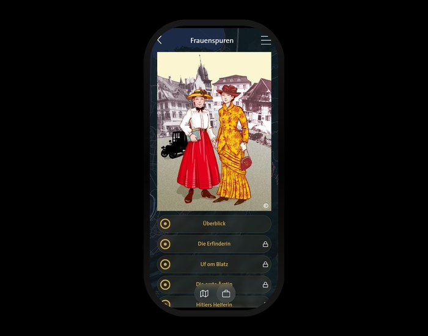

In May 2026, a new digital walking tour launches in Dornbirn: Frauenspuren. The basis is the book of the same name by the historian Roswitha Fessler, published as Volume 54 of the Dornbirner Schriften series. From the launch, the tour is available free of charge in the i.appear WebApp.
The tour tells the stories of Dornbirn women from the 19th and the first half of the 20th century. An inventor, for example, who at the age of 54 filed a patent for an energy-saving stove. A Trentine market woman who shaped the Dornbirn market square for sixty years. Vorarlberg’s first female doctor. A social democrat who was sent to prison for listening to Swiss radio. An opera singer with a “magnificent voice”, today nearly forgotten. A botanist whose herbarium still lies in the inatura – but whose scientific work didn’t earn a single word in her obituary.
And there are stories that hurt: a National Socialist woman who helped illegal Nazis flee over the mountains. A brewer who, after the sudden death of her husband, continued running Dornbirn’s largest inn with two small children. A worker who entered the textile factory at twelve and decades later was abused as a “cheeky woman” because she spoke at May Day marches “when no other woman dared do so”.
Whoever wants to hear the full stories takes the tour. This post asks a different question: why is it needed in the first place? And which stories have remained invisible in Dornbirn’s cityscape until now?
What Frauenspuren is about, in brief
Frauenspuren is, at its core, a translation. At its centre stands the book by the historian Roswitha Fessler: Frauenspuren – a different look at Dornbirn’s history in the 19th and first half of the 20th century, 192 pages, published as Volume 54 of the Dornbirner Schriften series. A research work that grew over years, in which Fessler lifted women out of the sources whom the official city memory hardly knows: inventors, market women, doctors, singers, botanists, social democrats, NS officials. Without this book and without Roswitha Fessler’s research, the digital tour wouldn’t exist. What is to be heard at the locations is not city marketing snippets, but excerpts from evidenced historical work, translated into a location-based form.
Frauenspuren belongs to the category i.history: documented, source-based urban history at the original scene, every location anchored on site. In this case, with a decidedly feminist perspective on a city whose sources are told predominantly in male terms. At every stop, there is an audio narrative in German or English, historical photographs and documents from the Dornbirn city archive, newspaper excerpts, patent sketches and illustrations by Lisa Althaus.
Also involved in the project are the Dornbirn city archive (Mag. Werner Matt), which provides visual material and sources, and the illustrator Lisa Althaus, whose work gives the locations their visual signature. At i.appear, Marilena Tumler has taken on the implementation.
Whoever wants to walk Frauenspuren opens a link in the browser, picks up their smartphone and sets off. No app download, no registration, no data collection. That is how i.appear works in general.
Six out of ninety-four: what Dornbirn’s street names reveal
Street names are unobtrusive messages. Walking through a city, one mostly doesn’t register them consciously, but they come along. They communicate who was important enough to receive a piece of urban space after death – and through what is missing, who wasn’t.
We looked at the Dornbirn list of streets: 516 directory entries in total, of which 94 streets are named after concretely identifiable persons. The ratio is unambiguous.
- Men: 88 (93.6%)
- Women: 6 (6.4%)
The six women’s streets are Angelika-Kauffmann-Strasse (after the Schwarzenberg painter, 1741–1807), Herta-Witzemann-Weg (after the Dornbirn interior designer and professor, 1918–1999), Katharine-Drexel-Strasse (after the American saint with Dornbirn roots, 1858–1955), Marienweg, Annagasse and Klaudiastrasse. The last three have religious or dynastic references. Secular and named after real women, then, are three streets in Dornbirn.
For context: the initiative Mapping Diversity has analysed 32 European cities and arrives at an EU average of around 9% women. Stockholm is at 19.5%. Dornbirn isn’t officially part of the study, but with 6.4% would land below the European average.
A methodological note: pure surname streets such as Hämmerlestrasse, Batloggstrasse or Nachbauerstrasse aren’t included in this count, because without source work they can’t be clearly assigned. They very likely refer to local industrial families and hence to further men. A full analysis can be found in Albert Bohle’s essay on Dornbirn’s street names. Whoever counted the unclassified streets along would arrive at an even lower share of women.
This is exactly where Frauenspuren begins. Where the cityscape leaves a representation gap, the digital tour opens it up.
Women’s history is not one story, but many
The easy variant would be to tell women’s history as a gallery of heroic pioneers: nothing but strong women who overcame all obstacles, all admirable, all role models. That is not the claim of Frauenspuren.
The tour tells of inventors as well as market women. Of doctors as well as innkeepers. Of resistance fighters as well as National Socialists. Of internationally celebrated singers as well as botanists whose scientific work nobody wanted to acknowledge during their lifetime. Migration stories appear – the Trentine woman who became a Dornbirn institution – and class contradictions between industrialists’ daughters and textile workers do too.
This diversity of women’s realities of life isn’t a sideshow, but the point. Women were rich, poor, religious, secular, brave, cowardly, treated unjustly and themselves unjust. An honest women’s history has to bear this layeredness instead of ironing it out.
Frauenspuren places uncomfortable stories alongside heroic ones. It places the engagement of a social democrat next to the complicity of an NS official. It doesn’t say “this is how women were”, but “this is how different they were”. That is intersectional, inclusive storytelling: not the one narrative, but many narratives that may contradict each other.
Why visibility is no symbolic issue
The question of who appears in public space – on street signs, monuments, memorial plaques – sounds like a debate for Sunday op-eds. Practically, it isn’t. Representation is a form of collective memory – and collective memory has historically been sorted patriarchally. It decides whose life’s achievements get handed down as self-evident, and whose stories one has to actively search for in order to find them.
Girls walking through a city in which 88 of 94 person streets honour men learn, at every waypoint, a quiet lesson: those who make history look like them. Women who achieved something in the same city have to be searched for first. They are possible, but they remain the exception.
A digital tour can’t be built overnight into 88 new street signs, and that isn’t the claim. But it can lay a second layer over the city. Whoever walks Frauenspuren no longer experiences Dornbirn only as a stage of industrial families and mayors, but also as the city of the botanist, the brewery owner, the market woman and the politician. Including the followers and the perpetrators. A more complete city, in other words, one in which women appear.
Visibility, then, means: in addition, not instead. Nothing is taken away from the men. Something is given back to the women – a piece of HerStory in a city whose history, until now, has been told in male terms.
Education that reaches everyone: low-threshold, free, lasting
Educational work that wants to reach everyone always has to deal with two hurdles. One is access: does it cost something? Does it need registration? Am I tied to fixed times? The other is the form of communication: does it sound like university, activism or school – and in a tone that I can’t relate to?
Frauenspuren tries to keep both hurdles as low as possible. Not out of pedagogical idealism, but because sustainable education requires exactly this: content that is accessible without gatekeepers and that connects to the learners’ everyday world.
Concretely, this means:
- Free. No entry fee, no licence, no hidden charges.
- No app download. The WebApp runs in the browser, on any smartphone, without using storage space and without the app-store hurdle.
- No registration. No email, no password, no account. Privacy is built in, not bolted on (Privacy by Design).
- Multilingual. Audio guides in German and English open the tour for tourists, international school groups and people with other first languages.
- Self-determined pace. Whoever has five minutes listens to one location. Whoever has an hour walks the whole tour. Nobody is rushed, nobody left behind.
- Permanently online. No time-limited exhibition, no one-off event. The tour stays – and with it the knowledge.
- Place-based learning. Learning at the original scene has been shown to work more deeply than learning in decontextualised rooms. What is told at the street corner where it happened has a different impact than a paragraph in a textbook.
These qualities together make Frauenspuren an educational offering in the spirit of educational equity and gender equity: it excludes nobody on the basis of money, technology, language, time or physical mobility – and it brings back into urban space those women whom the established canon of history has overlooked.
Inclusive history education and digital inclusion are here the same thing: knowledge doesn’t belong to an elite, but to the city.
How the tour works
Frauenspuren is a location-based WebApp that runs in the browser. It works on any smartphone, without installation, without an account, without advertising.
At every location, there is:
- an audio guide in German or English, spoken like a radio play
- historical photographs and documents from the Dornbirn city archive
- outstanding illustrations by Lisa Althaus
- the interactive map with GPS navigation to the next location
- references to other i.appear tours where locations overlap (such as the memorial stone in the Museumspark, which also appears in hist.appear and Buntes Dornbirn)
You can walk the tour in one go or spread it across several days, pick out individual locations, or explore from the sofa when you happen not to be in Dornbirn – the audio and images work everywhere.
Free. No download. No account. No data collection. As with everything at i.appear. Anyone who wants to know more about the format: What is a digital walking tour?
When, where, how
- Launch: May 2026
- City: Dornbirn (Vorarlberg, Austria)
- Languages: German, English
- Access: iappear.app/en → Dornbirn region → i.history → Frauenspuren
- Book to the tour: Roswitha Fessler, Frauenspuren – ein anderer Blick auf Dornbirns Geschichte im 19. und der ersten Hälfte des 20. Jahrhunderts, Dornbirner Schriften Volume 54, 192 pages (in German)
Whoever next walks across the market square, past the parish church, through the Marktstrasse, along the inatura or stands at the Museumspark has the chance, from May 2026, to lay a second layer over the city. A layer that shows who lived, worked, argued, researched, sang and contradicted there – the half that hardly appears in the street names.